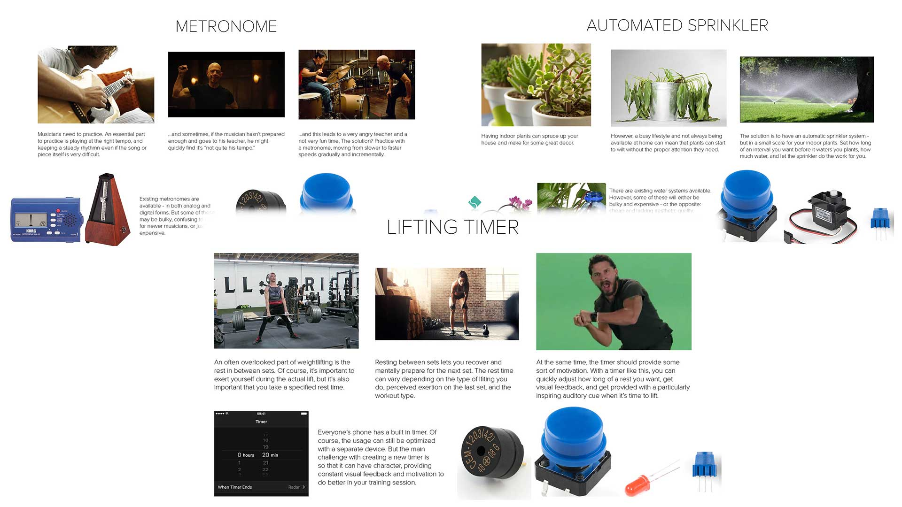
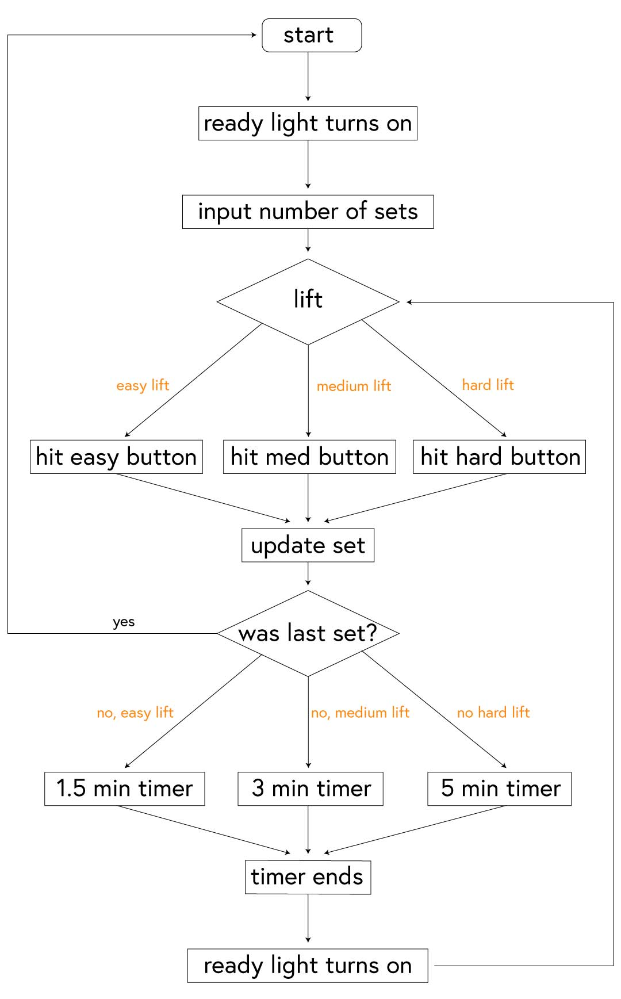
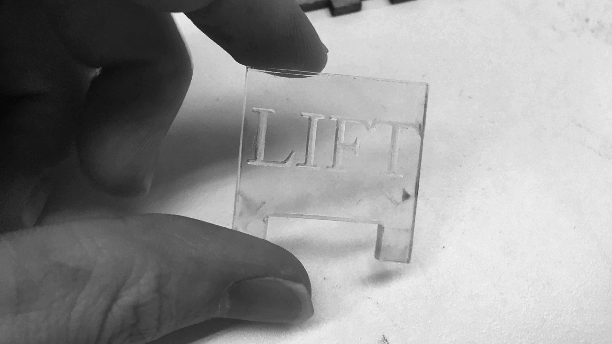
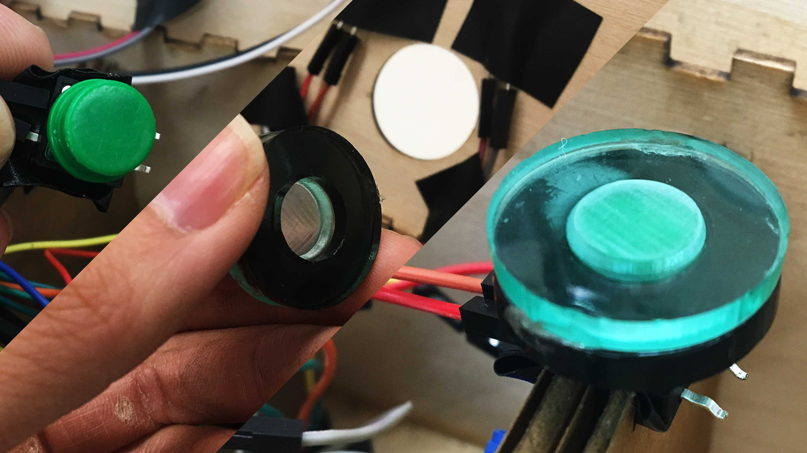
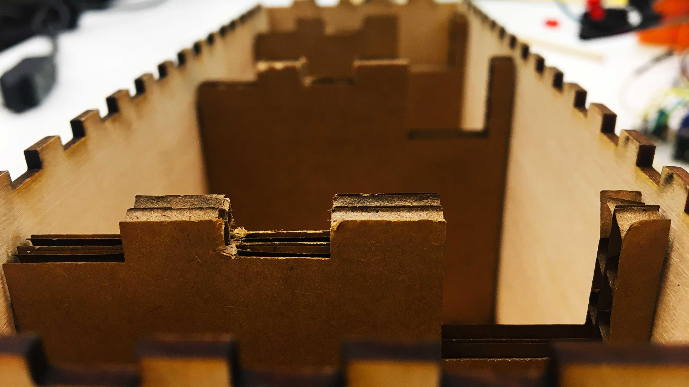
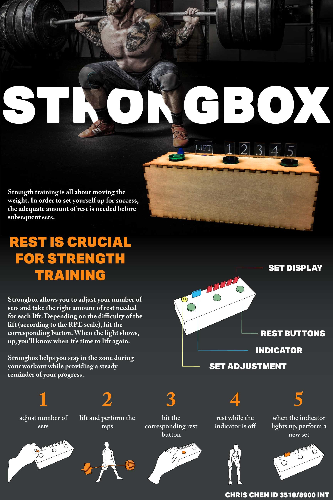
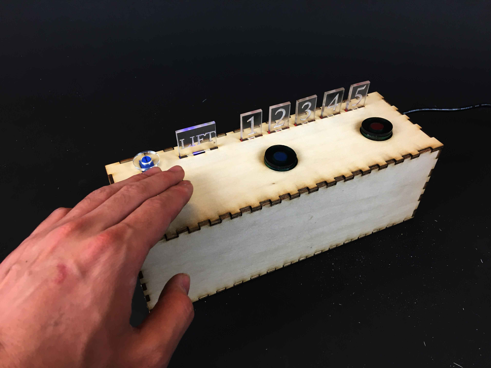

strongbox
craft a story through the physical design of an interactive timer by focusing on user experience
The Interactive Product Design Lab at Georgia Tech is focused on exploring the possibilities of using technology to create products that engage users. As a part of the class, we were tasked with creating a fairly simple product – a timer – in a single
week as well as embedding a story within the timer and the interaction with the device.
I created a timer focused on helping lifters training for strength at the gym, ensuring they get the right amount of rest in between sets, and keeping track of their progress throughout an exercise. Because of the limited resources and time available, it was crucial to be creative and economic with each component and interaction. My personal focus throughout this project was to emphasize the interaction and experience of using the product. Every tool and technique used was ultimately to design for the intended audience and activity.
I created a timer focused on helping lifters training for strength at the gym, ensuring they get the right amount of rest in between sets, and keeping track of their progress throughout an exercise. Because of the limited resources and time available, it was crucial to be creative and economic with each component and interaction. My personal focus throughout this project was to emphasize the interaction and experience of using the product. Every tool and technique used was ultimately to design for the intended audience and activity.
process
First, to create the narrative basis for my product, I needed to find potential uses for a timer. I drew heavily on my interests and background to generate three ideas: a timer combined with a metronome that would help children practice music for set
intervals of time, a timer that regulated the watering of plants, and a workout timer made specifically for powerlifting training.
I chose to focus on the last, as my recent interest in powerlifting provided the opportunity to focus on a specific target audience and to develop my ideas more carefully. I first started by breaking down potential use cases and listing possible features required during a training session.
Here I also directed my attention on the rules of interaction. Instead of forcing users to play around with a knob to set the time interval, I painted a picture of the ideal experience: a user, full of energy and pumped after a lift, takes a few steps over to the device, and slams a single button that corresponds to the amount of rest they feel they need, and continues his workout.
As I determined the exact timing wasn’t crucial, I grouped these cases into 3 simple buckets: an easy lift (which meant a 1.5 minute rest), a medium difficulty lift (3 minute rest), and a hard lift (5 minute rest). For these 3 buckets, I would need 3 buttons. The user needs simply to mash the corresponding button. The potentiometer and knob would still be used – but instead to adjust the total number of sets before starting a training session.
I wanted to try my hand at edge lit acrylic signs with their clean, subdued, and yet instantly recognizable display. I laser cut clear pieces of acrylic with etched numbers and letters. Through testing, I noticed more scratched up surfaces helped to diffuse light more, creating a more exaggerated effect. I went by hand, using an X-acto knife to rough out the edges of each of the panels and the etching.
 Moving onto a “feels-like” model - in this case, modifying the "looks-like" model, I used multiple laser-cut faces for the top panel with all the holes for the different components. With these props, I could do some bodystorming, playing
around the physical locations and seeing what felt the most natural. I also had others try this scenario, gathering their feedback for where they expected the LED indicators to display information or how much space between buttons felt comfortable.
Moving onto a “feels-like” model - in this case, modifying the "looks-like" model, I used multiple laser-cut faces for the top panel with all the holes for the different components. With these props, I could do some bodystorming, playing
around the physical locations and seeing what felt the most natural. I also had others try this scenario, gathering their feedback for where they expected the LED indicators to display information or how much space between buttons felt comfortable.
Here I was also faced with a challenge of solidifying the main interaction: hitting the button. I knew mashing the button needed to be satisfying, visceral, and engaging – it was what followed a tough lift and needed to fit seamlessly within that experience. How could I facilitate this energy with the physical design of the button? First of all, the scale of the button was too small. I used laser cut and engraved acrylic press-fit pieces to increase the surface area of the button (I determined a 3-finger-width sized button was approximately what I was looking for in terms of comfort).
The final prototype was made out of basswood, with cardboard ribs. With interlocking finger joints, the box held together as a sturdy unit, reflecting the nature of what lifters expected from such a device. The cardboard ribs were inserted, and the components were fit inside their cutouts, with the wires organized into their respective slots.
I chose to focus on the last, as my recent interest in powerlifting provided the opportunity to focus on a specific target audience and to develop my ideas more carefully. I first started by breaking down potential use cases and listing possible features required during a training session.

In training, the goal is to develop, first and foremost, strength. The best way to do this is to move the most weight possible. Based on the self-determined level of exertion (according to Borg Rating of Perceived Exertion, or RPE scale) lifters may need
to take rest periods between sets anywhere from 1.5 to 5 minutes. There is a balancing act: lifters need to make sure to get enough rest to be able to push/pull their next weight successfully thereby increasing their strength, but ideally a workout
shouldn’t take excessively long. The device also allowed the user to adjust the number of total sets and displays progress throughout. Part of the appeal of such a device might be that existing timer apps can distract users – especially if they
are “in the zone” and trying to remove unnecessary distractions. More importantly, strength training is an inherently kinetic and visceral activity – I wanted to design for interactions that reflects that nature. With the concept fleshed out, I
proceeded to develop a “works-like” model. This meant wiring up an Arduino along with the necessary components (LEDs, buttons, and a potentiometer) to a breadboard, and creating the code that allowed for all the functions.
Here I also directed my attention on the rules of interaction. Instead of forcing users to play around with a knob to set the time interval, I painted a picture of the ideal experience: a user, full of energy and pumped after a lift, takes a few steps over to the device, and slams a single button that corresponds to the amount of rest they feel they need, and continues his workout.
As I determined the exact timing wasn’t crucial, I grouped these cases into 3 simple buckets: an easy lift (which meant a 1.5 minute rest), a medium difficulty lift (3 minute rest), and a hard lift (5 minute rest). For these 3 buckets, I would need 3 buttons. The user needs simply to mash the corresponding button. The potentiometer and knob would still be used – but instead to adjust the total number of sets before starting a training session.

The code took into account the process of the use of such a device , which I determined in a storyboard format. It had to showcase three modes: pre-workout (determining the number of sets), during workout (hitting the buttons to activate rest periods
and lifting when the indicators noted it was time), and post-workout (after the last set, the device would go back to the pre-workout phase, ready for another exercise). After this, I moved onto a rough “looks-like” model to determine the physical
design of the device. I knew it had to reflect the rugged nature of the activity and couldn’t be too small for comfortable use. Within the constraints of our materials and components, I also knew it had to fit an Arduino, its components, a breadboard,
and wires. With an extremely quick chipboard and hot glue model, I determined requisite scale and spacing for parts.
I wanted to try my hand at edge lit acrylic signs with their clean, subdued, and yet instantly recognizable display. I laser cut clear pieces of acrylic with etched numbers and letters. Through testing, I noticed more scratched up surfaces helped to diffuse light more, creating a more exaggerated effect. I went by hand, using an X-acto knife to rough out the edges of each of the panels and the etching.

I created the effect using little legs for each of the acrylic panels which fit into cutouts in the top panel, adding stability and bringing the panels closer to the LEDs. The LEDs shone through another hole between the legs of the acrylic to generate
as much light as close as possible. In the end, the lighting effect wasn’t ideal due to several factors: the LEDs already had light tubes around them, the sides needed to have been taped off properly, and that the panels and LEDs needed to fit within
the limited size of box.
Here I was also faced with a challenge of solidifying the main interaction: hitting the button. I knew mashing the button needed to be satisfying, visceral, and engaging – it was what followed a tough lift and needed to fit seamlessly within that experience. How could I facilitate this energy with the physical design of the button? First of all, the scale of the button was too small. I used laser cut and engraved acrylic press-fit pieces to increase the surface area of the button (I determined a 3-finger-width sized button was approximately what I was looking for in terms of comfort).

I knew it also needed support for the downward force to really increase the sense of tactility. Ribs within the box could hold these buttons up, as I found through cardboard prototypes. This solution also helped the top face from bowing
inwards when pressed. Lastly, I noticed if I included cut sections in the ribs themselves, it could help organize the mess of jumper cables and wires inside the box. With these features, the physical use and interaction with the button felt sturdy
and responsive – exactly what was needed from the Strongbox.
The final prototype was made out of basswood, with cardboard ribs. With interlocking finger joints, the box held together as a sturdy unit, reflecting the nature of what lifters expected from such a device. The cardboard ribs were inserted, and the components were fit inside their cutouts, with the wires organized into their respective slots.

As part of my presentation, I created a poster to display Strongbox, included in the gallery below.
gallery

